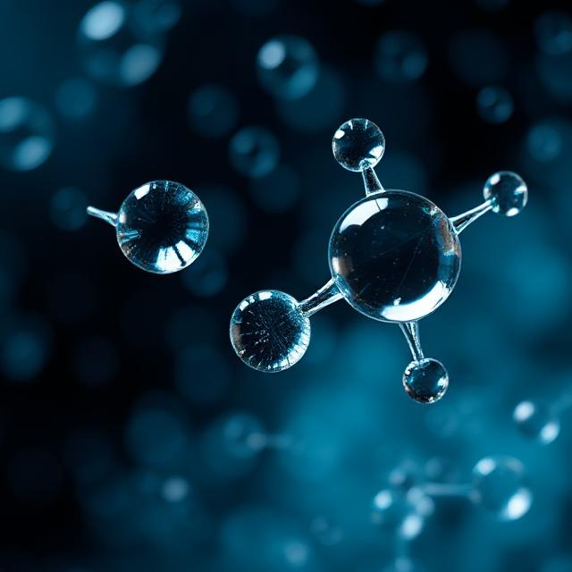

Boldogság hormon?
A dopamin egy vegyület, amely hormonként és neurotranszmitterként is működik a szervezetben. Az agyban a ventrális tegmentális terület (VTA), a feketeállomány, a retrorubrális terület és a hipotalamusz termeli.
A dopamin egy vegyület, amely hormonként és neurotranszmitterként is működik a szervezetben. Az agyban a ventrális tegmentális terület (VTA), a feketeállomány, a retrorubrális terület és a hipotalamusz termeli.
Gyógyszerként a szimpatikus idegrendszerre hat, de nem jut át a vér-agy gáton, ezért a dopaminszint növelésére Parkinson-kór esetén L-Dopa-t alkalmaznak. A szervezet a dopamint inaktív metabolitokká bontja, amelyek 24 órán belül kiürülnek a vizelettel.

A dopamin kémiai neve: 4-(2-aminoetil)benzol-1,2-diol. A katekolaminok családjába tartozik, és prekurzora az adrenalinnak és a noradrenalinnak.
Az agyban (ideghálózatokban) és a mellékvesében keletkezik, a neuronok vezikuláiban tárolódik, majd az akciós potenciál hatására a szinapszisba kerül.
A főszerep az első pontnak jut, az esetek többségében a dopamin visszaszállítódik a preszinaptikus neuronba, ahol vagy lebomlik, vagy visszakerül a vezikulumba, és várja feladatát.
Fő szerepe a jutalmazási rendszerben van: aktiválódik pozitív élményeknél vagy jutalom előrejelzésekor. De fontos a tanulásban és viselkedésformák kialakításában. Az agyban négy fő dopamin-pálya található, amelyek különböző funkciókat látnak el.
A dopamint gyógyszerként több néven forgalmazzák (pl. Intropin, Dopastat, Revimin), és szerepel a WHO Alapvető Gyógyszerek Listáján.
Súlyos hipotenzió, bradikardia, szívmegállás kezelése (különösen újszülötteknél). Intravénásan adagolják, mivel felezési ideje rövid (felnőttekben kb. 1 perc, újszülöttekben max. 5 perc).
Kis dózisban fokozza a szívizom összehúzódását, emeli a pulzust és a vérnyomást. Nagyobb dózisban érszűkületet (vasoconstrictio) okoz, tovább növelve a vérnyomást. Korábbi kutatások szerint kis dózisban javíthatja a vesefunkciót, de újabb vizsgálatok ezt cáfolták.